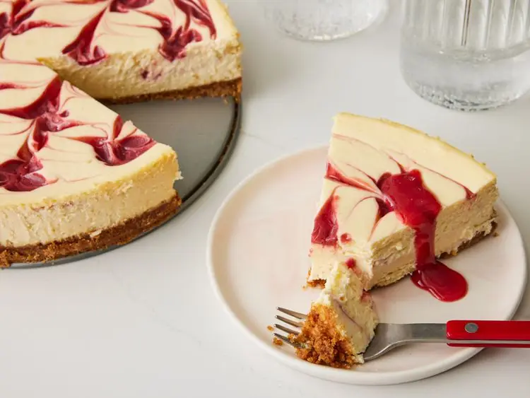

Strawberry Cheesecake
- Total time5 hrs and 30 mins
- Serves12
- Ingredients12
- Steps11

Ingredients
For the graham cracker crust
- 1 ¼ cups graham cracker crumbs
- ⅓ cup butter, melted
- ¼ cup white sugar
- 2 teaspoons ground cinnamon, or to taste
For the filling
- 2 (10 ounce) packages frozen sweetened sliced strawberries, thawed and drained
- 1 tablespoon cornstarch
- 3 (8 ounce) packages cream cheese, softened
- 1 (14 ounce) can sweetened condensed milk
- ¼ cup lemon juice
- ½ teaspoon vanilla extract
- 3 large eggs
- 1 tablespoon water (Optional)
Directions
- Gather all ingredients.
- To make the crust: Combine graham cracker crumbs, butter, sugar, and cinnamon in a bowl; mix well. Press onto the bottom of an ungreased 9-inch springform pan. Place in the refrigerator to chill for 30 minutes. Preheat the oven to 300 degrees F (150 degrees C).
- To make the filling: Place strawberries and cornstarch into a blender; cover and puree until smooth.
- Pour strawberry sauce into a saucepan and bring to a boil over high heat. Boil and stir until sauce is thick and shiny, about 2 minutes. Set aside 1/3 cup strawberry sauce; cool. Cover and refrigerate remaining sauce for serving.
- Beat cream cheese in a mixing bowl with an electric mixer until light and fluffy; gradually beat in condensed milk. Mix in lemon juice and vanilla extract, then beat in eggs on low speed until just combined.
- Pour 1/2 of the cream cheese mixture over crust; drop 1/2 of the reserved strawberry sauce by 1/2 teaspoonfuls on cream cheese layer.
- Carefully spoon remaining cream cheese mixture over sauce; drop remaining strawberry sauce by 1/2 teaspoonfuls on top.
- Cut through the top layer only with a knife to swirl strawberry sauce.
- Bake in the preheated oven until the center is almost set, 45 to 50 minutes.
- Cool on a wire rack for 10 minutes. Carefully run a knife around the edge of the pan to loosen; cool for 1 hour at room temperature. Refrigerate at least 4 hours to overnight before serving.
- Serve reserved strawberry sauce with cheesecake. If sauce is too thick, stir in water.
Recipe credit: allrecipes.com